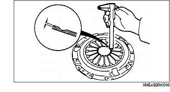
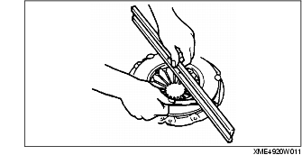
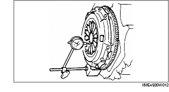

Clutch cover inspection
1. Measure the wear of the diaphragm spring fingers.

Clutch cover diaphragm spring fingers maximum depth
2. Measure the flatness of the pressure plate with a straight edge and a feeler gauge.

Maximum clearance of flatness of the pressure plate
3. When checking the diaphragm spring fingers, mount a dial indicator on the cylinder block.
4. Rotate the flywheel and check for misaligned diaphragm spring fingers.

Clutch cover diaphragm spring fingers maximum misalignment